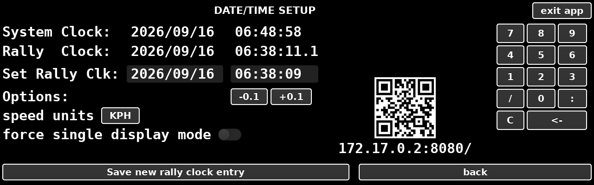

Total displays distance and elapsed time since start. Pressing Total resets
the distance to zero.
Awaiting an autostart it also resets Trip but does not reset the
timer.
During a stage it also resets Trip but does not reset the timer.
Confirmation is required.
Outside of a stage it resets the timer but not the Trip.
Trip
Trip displays an intermediate distance and time since it was last pressed.
If a stage is active it also resets itself with auto speed changes or when
next or prev are pressed. During a stage or awaiting
an autostart Trip will also be reset by Total.
next
next is pressed during a stage to move to next speed where the
auto speed change check box has not been ticked, or to override the system if
the speed change appears earlier than programmed. The following change point
does not move and removes its same distance from the start.
The counter shows the distance still to run before the speed change and the
speed it changes to. > END signifies there are no further speed
changes, and ---.--- means no stage is loaded.
prev
prev undoes the last speed change, whether the crew made it or
the box made it automatically; it works only in the section after the change and
only once, and is grey when there is nothing to undo.
−10, set and +10
These correct the measured distance. -10 and +10
move Total and Trip by ten metres each press. set changes Total to
the figure typed into the box (Trip is not affected). Changes made during a
stage reestimate the average speeds and timing error.
Alarm KM
Pressing one of the numbers 2 to 13 sets an alarm when the car has travelled
that many kilometres. A countdown of the distance appears under the pad, and
clear cancels it.
The stage table
Shows each leg of the loaded stage with its target speed, its length, and the
running total at its end.
date/time

The date/time screen.
Setting Rally Clock
The System Clock is the Raspberry Pi's own clock. The Rally Clock is the one
every stage is timed against. Set Rally Clk is used to update the Rally Clock
and is prepopulated ready for editing.
Tap the date box and delete what is there with <-.
Type the date on the keypad as yyyy/mm/dd, using the
/ key for the separators.
Tap the time box, delete what is there, and type the time as
hh:mm:ss, using the : key.
Press Save new rally clock entry.
IMPORTANT: Both date and time boxes must be complete and formatted correctly
otherwise the changes will not be saved. Do not enter tenths of seconds.
Trimming the Rally Clock
Small adjustments to the rally clock may be made by pressing the
-0.1 and +0.1 buttons to adjust the time by a tenth
of a second. Hold a button down to repeat. Each press is saved
immediately.
Speed units
The button shows the unit in use. Pressing toggles between KPH and MPH and
the selection is saved automatically.
Force Single Display Mode
When set to ON the driver's gauge will be incorporated into the co-driver
screen when the program is next rebooted. The driver's display is
disabled.
Phone Control Link
When the rally box is tethered to a mobile phone (prior to starting this
program), the phone can be used to control the device and play the timing
tones. The IP address shown on the device can be typed directly into the
phone's browser or entered using the camera and QR code. Part 2 describes what
the phone can do.
Exit App
exit app saves the settings and closes the program. It does not
switch the Raspberry Pi off.
calibration
The calibration screen.
Calibrating over a set distance
Press Start/Zero to zero the counters.
Drive the measured kilometre or any known distance.
Enter the actual distance driven (not the device distance) into the Actual
distance covered box. This must be at least 500 m.
Press Set sensor 1 or Set both sensors and avg. to
choose which counter is used. This will remain displayed in yellow.
Press Save Calibration.
The saved calibration will be displayed in yellow, for example Calibration
9999 pulses/KM.
Adjusting an existing calibration
Where the calibration is incorrect it can be adjusted directly by entering a
new pulses per kilometre figure into the Reset to box and pressing
Reset. No driving is needed. A figure of zero or less is ignored.
It is not necessary to press Save Calibration.
Prop/Wheel RPM
The reading under the keypad is the propshaft or wheel speed in revolutions
per minute, taken from sensor 1. For it to be correct, type the number of pulses
the sensor gives per revolution into the box ahead of the rpm reading.
Back
Back returns to the main screen.
segments
The stage setup screen.
Entering new stage information
If there are existing speeds and distances shown, press del
beside each line first.
Tap the KPH box and type the target speed.
Tap the metres box and type the length of the leg.
Tick Auto for the box to change to the next speed by itself at
the end of the leg. Leave it clear to change speed by pressing
next.
Press add and the entered information will populate the
table.
Several legs can be entered at once by separating the figures with
semicolons, e.g. 30;40 with 1000;2000 adds 1000 m at
30, then 2000 m at 40.
The table shows each leg with the time it should take. In a dual display
configuration the total distance as well as the interim distances of the current
loaded stage will show in the co-driver main window.
Saving and Recalling saved stages
Pressing Set 1 to 5 will save the stage on screen into that
memory for later use, and you will be asked to confirm that you want to
overwrite the memory slot if it is in use. The corresponding Recall button will
invert colours. Recall 1 to 5 loads it back into current memory and
displays the details.
Clear Memory
Pressing this will clear all saved stages after confirmation. It does not
delete the current stage information, which stays on the screen.
Tone
The driver's aural error tones can be enabled or disabled using the
tone off/on switch. Type 1 pulses faster the larger the correction
needed. Type 2 is a continuous tone whose pitch follows the seconds of
error.
Beep Assist KM
Beep Assist is an aural navigation assistant which gives warnings ahead
of upcoming navigations and alerts to identify measured distance
inaccuracies.
The total roadbook elapsed distance at each box in a stage should be entered
into the top entry field (not the distance between each box) and this will be
saved and recalled alongside the stage speeds and distance information.
Navigation assistance is designed to prevent a navigator missing an action
by sounding an alert at a preconfigured distance, in metres, ahead of a roadbook
box. 100 metres is a sensible advance configuration choice. Navigation gives a
double beep.
Timing assistance is designed to identify deviation away from perfect
timings due to distance inaccuracies caused by wheel spin, corner cutting or
sensor skipping. The alert sounds when the car should be passing a roadbook box.
Zero seconds is a sensible Advance configuration choice, though it can be
configured to beep early. Timing gives a single beep.
Beep Assist can be disabled using the Off/On switch. If it is
enabled, the respective Navigation and Timing tick boxes need to be checked for
it to sound. The advance configurations (metres and seconds) do not get saved
and recalled.
back
back returns to the main screen.
stage go
The question the stage go button asks.
Stage Go displays the loaded stage details for review and offers three ways
to start.
Now starts the stage immediately.
At HH:MM sets an autostart at the next round minute and permits
early departure.
Later up to 3 hours in the future. Can be set while a stage is
in progress. No early departure.
Now
Starts the stage immediately and has the following characteristics:
locks the current stage data for the remainder of the stage.
cancels any stage running and other future programmed autostarts.
resets Total and Trip distances to zero and the counter starts the timer
immediately.
Advantages: can be used with a flying start if late to a stage, though the
difference between the start time and the actual time at the start line will
need to be corrected for. Disadvantages: start time accuracy is only as good as
the navigator's reactions.
At HH:MM
Starts the stage on the next whole minute, which is automatically shown on
the button. It has the following characteristics:
locks the current stage data for the upcoming stage.
cancels any stage running and other future programmed autostarts.
displays stage speed and countdown to the start in the driver's
display.
early departure is enabled, allowing the car to pull away early if the car
will struggle to get up to speed or will be obstructed. This works because the
timer resets at the autostart minute but the distance is reset when the option
is selected.
pressing Total ahead of departure will zero any pre-departure
movements.
if after the HH:MM menu option appears you wait until after the minute has
passed, you will be told you need to trigger the menu again as the start time
elapsed.
Advantages: can make an early departure; simple one button press when lining
up for the start; perfect start time. Disadvantages: can only be pressed within
59 seconds of the start.
Later
Starts the stage a predetermined time up to 3 hours in the future, even if a
stage is currently under way. To use it tap the autostart entry box, type the
start time as hh:mm:ss on the keypad, press set to
store; back to return to main screen. Press Clear to
remove the autostart. It has the following characteristics:
it does NOT lock the current stage data for the upcoming stage. Whatever
stage data is loaded when the autostart fires will only be locked at that
time.
it does NOT cancel any stage running. You can continue with the existing
stage.
it displays a countdown, but the driver display will continue to display the
current stage information.
early departure is NOT enabled, because the distances and timer reset at the
autostart time.
Advantages: can be configured while another stage is in progress; can be
configured more than 1 minute in advance; can make last minute changes to
segment instructions; perfect start time. Disadvantages: no early start; very
early reconfiguration means the driver display is obscured by the
countdown.
ABORT STAGE
Ends the stage after confirmation. The driver's needle returns to zero and
the tone stops. Total and Trip keep their readings, and any autostart that has
been set is cancelled.
Back
Closes the question and changes nothing.
driver Zero
This option is used to rebase the driver's gauge to show zero error when the
driver targets an error other than zero.
The popup window will show the ahead/behind value (the true error) and the
current adjustment (how much is currently adjusted).
Yes sets the offset to zero.
Reset to 0.0 removes the offset. The gauge shows the true error
again.
No changes nothing.
Only the driver's gauge changes. The distances, the schedule and the clock
stay as they are, and starting a stage clears the offset.
The phone app
When the rally box is tethered to a mobile phone the phone can be used to
control the device. The IP address shown on the date/time page of the device can
be typed directly into the phone's browser or entered using the camera and QR
code. The phone page will show connected in green when active.
The Live page replicates the functions of the main page on the co-pilot's
screen; the Setup page replicates the functions of the segments page.
The error tones can be played via the phone when the sound on button at the
top is illuminated.